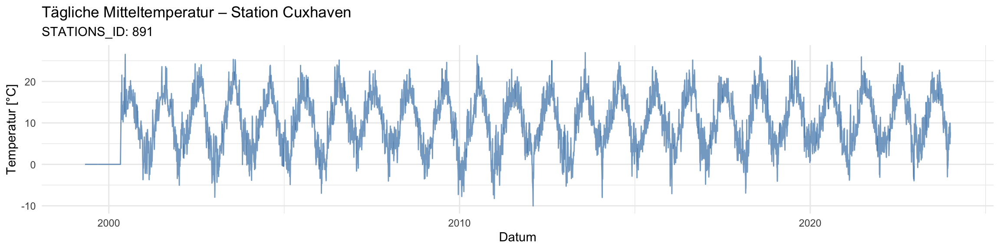
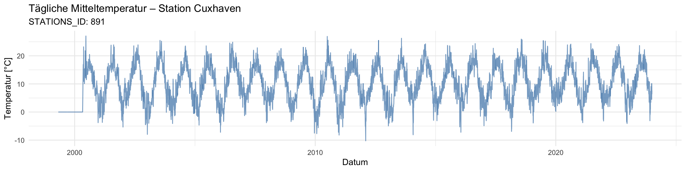

suppressPackageStartupMessages({
library(rvest)
library(stringr)
library(httr)
library(dplyr)
library(readr)
library(lubridate)
library(fs)
library(purrr)
library(ggplot2)
})TempTrend_DWD
meta_geo_clean <- readRDS("meta_go_clean.rds")
all_data <- readRDS("all_data.rds")warum und wie ändern sich die Stationsparameter über die Jahre?
!! 10-min Messwerte erst seit den 90ern
Standortveränderungen
library(dplyr)
station_moves <- meta_geo_clean %>%
arrange(STATIONS_ID, von_datum) %>%
group_by(STATIONS_ID) %>%
mutate(
lat_diff = latitude - lag(latitude),
lon_diff = longitude - lag(longitude),
alt_diff = Stationshoehe - lag(Stationshoehe),
pos_change = sqrt(lat_diff^2 + lon_diff^2), # in Grad (~111 km/°)
sign_move = pos_change > 0.001 | abs(alt_diff) > 5 # grob: >100 m oder >5 m Höhe
) %>%
filter(sign_move == TRUE) %>%
select(STATIONS_ID, Stationsname, von_datum, bis_datum, latitude, longitude, Stationshoehe, lat_diff, lon_diff, alt_diff)# Beispielstation mit erkennbarer Verlagerung
example_station <- station_moves$STATIONS_ID[1]
change_date <- station_moves$von_datum[1]
# Zeitfenster definieren (±180 Tage)
range_start <- change_date - 180
range_end <- change_date + 180
# Temperaturdaten extrahieren
temp_change <- all_data %>%
filter(STATIONS_ID == example_station,
MESS_DATUM >= range_start,
MESS_DATUM <= range_end) %>%
mutate(date = as.Date(MESS_DATUM)) %>%
group_by(date) %>%
summarise(
T_mean = mean(TT_10, na.rm = TRUE),
.groups = "drop"
)messzeitraum <- all_data %>%
group_by(STATIONS_ID) %>%
summarise(
messung_von = min(MESS_DATUM, na.rm = TRUE),
messung_bis = max(MESS_DATUM, na.rm = TRUE),
.groups = "drop"
)
meta_relevant <- meta_geo_clean %>%
inner_join(messzeitraum, by = "STATIONS_ID") %>%
filter(von_datum <= messung_bis, bis_datum >= messung_von)station_moves <- meta_relevant %>%
arrange(STATIONS_ID, von_datum) %>%
group_by(STATIONS_ID) %>%
mutate(
lat_diff = latitude - lag(latitude),
lon_diff = longitude - lag(longitude),
alt_diff = Stationshoehe - lag(Stationshoehe),
pos_change = sqrt(lat_diff^2 + lon_diff^2), # in Grad (~111 km/°)
sign_move = pos_change > 0.001 | abs(alt_diff) > 5 # grob: >100 m oder >5 m Höhe
) %>%
filter(sign_move == TRUE) %>%
select(STATIONS_ID, Stationsname, von_datum, bis_datum, latitude, longitude, Stationshoehe, lat_diff, lon_diff, alt_diff)# Beispielstation mit erkennbarer Verlagerung
example_station <- station_moves$STATIONS_ID[1]
change_date <- station_moves$von_datum[1]
# Zeitfenster definieren (±180 Tage)
range_start <- change_date - 180
range_end <- change_date + 180
# Temperaturdaten extrahieren
temp_change <- all_data %>%
filter(STATIONS_ID == example_station,
MESS_DATUM >= range_start,
MESS_DATUM <= range_end) %>%
mutate(date = as.Date(MESS_DATUM)) %>%
group_by(date) %>%
summarise(
T_mean = mean(TT_10, na.rm = TRUE),
.groups = "drop"
)Stationen mit Messdaten vor 1950
library(dplyr)
library(lubridate)
# Alle Konfigurationen mit Messstart vor 1950
stations_pre1950 <- meta_geo_clean %>%
filter(von_datum < ymd("1950-01-01")) %>%
arrange(STATIONS_ID, von_datum) %>%
group_by(STATIONS_ID, Stationsname) %>%
summarise(
erste_aufzeichnung = min(von_datum),
letzte_konfig = max(bis_datum),
hoehe = first(Stationshoehe),
lat = first(latitude),
lon = first(longitude),
.groups = "drop"
)messzeitraum <- all_data %>%
group_by(STATIONS_ID) %>%
summarise(
erste_messung = min(MESS_DATUM, na.rm = TRUE),
letzte_messung = max(MESS_DATUM, na.rm = TRUE),
.groups = "drop"
)
# Kombinieren
stations_pre1950_with_data <- stations_pre1950 %>%
left_join(messzeitraum, by = "STATIONS_ID") %>%
filter(!is.na(erste_messung)) # nur mit tatsächlich vorhandenen Datenset.seed(42)
chosen_station <- stations_pre1950_with_data %>%
slice_sample(n = 1)
chosen_station_id <- chosen_station$STATIONS_ID
chosen_station_name <- chosen_station$Stationsname
print(chosen_station)# A tibble: 1 × 9
STATIONS_ID Stationsname erste_aufzeichnung letzte_konfig hoehe lat lon
<int> <chr> <date> <date> <dbl> <dbl> <dbl>
1 891 Cuxhaven 1937-01-01 1951-05-03 2 53.9 8.70
# ℹ 2 more variables: erste_messung <dttm>, letzte_messung <dttm>temp_daily <- all_data %>%
filter(STATIONS_ID == chosen_station_id) %>%
mutate(date = as.Date(MESS_DATUM)) %>%
group_by(date) %>%
summarise(
t_mean = mean(TT_10, na.rm = TRUE),
.groups = "drop"
)ggplot(temp_daily, aes(x = date, y = t_mean)) +
geom_line(color = "steelblue", alpha = 0.7) +
labs(
title = paste("Tägliche Mitteltemperatur – Station", chosen_station_name),
subtitle = paste("STATIONS_ID:", chosen_station_id),
x = "Datum",
y = "Temperatur [°C]"
) +
theme_minimal()
temp_daily <- all_data %>%
filter(STATIONS_ID == chosen_station_id) %>%
mutate(date = as.Date(MESS_DATUM)) %>%
group_by(date) %>%
summarise(
t_median = median(TT_10, na.rm = TRUE),
.groups = "drop"
)ggplot(temp_daily, aes(x = date, y = t_median)) +
geom_line(color = "steelblue", alpha = 0.7) +
labs(
title = paste("Tägliche Mitteltemperatur – Station", chosen_station_name),
subtitle = paste("STATIONS_ID:", chosen_station_id),
x = "Datum",
y = "Temperatur [°C]"
) +
theme_minimal()
sessionInfo()R version 4.4.3 (2025-02-28)
Platform: x86_64-apple-darwin20
Running under: macOS Sequoia 15.3.2
Matrix products: default
BLAS: /Library/Frameworks/R.framework/Versions/4.4-x86_64/Resources/lib/libRblas.0.dylib
LAPACK: /Library/Frameworks/R.framework/Versions/4.4-x86_64/Resources/lib/libRlapack.dylib; LAPACK version 3.12.0
locale:
[1] en_US.UTF-8/en_US.UTF-8/en_US.UTF-8/C/en_US.UTF-8/en_US.UTF-8
time zone: Europe/Berlin
tzcode source: internal
attached base packages:
[1] stats graphics grDevices datasets utils methods base
other attached packages:
[1] ggplot2_3.5.1 purrr_1.0.4 fs_1.6.5 lubridate_1.9.4
[5] readr_2.1.5 dplyr_1.1.4 httr_1.4.7 stringr_1.5.1
[9] rvest_1.0.4
loaded via a namespace (and not attached):
[1] gtable_0.3.6 jsonlite_2.0.0 compiler_4.4.3 renv_1.1.4
[5] tidyselect_1.2.1 xml2_1.3.8 scales_1.3.0 yaml_2.3.10
[9] fastmap_1.2.0 R6_2.6.1 labeling_0.4.3 generics_0.1.3
[13] knitr_1.50 tibble_3.2.1 munsell_0.5.1 pillar_1.10.2
[17] tzdb_0.5.0 rlang_1.1.5 utf8_1.2.4 stringi_1.8.7
[21] xfun_0.52 timechange_0.3.0 cli_3.6.4 withr_3.0.2
[25] magrittr_2.0.3 digest_0.6.37 grid_4.4.3 rstudioapi_0.17.1
[29] hms_1.1.3 lifecycle_1.0.4 vctrs_0.6.5 evaluate_1.0.3
[33] glue_1.8.0 farver_2.1.2 colorspace_2.1-1 rmarkdown_2.29
[37] tools_4.4.3 pkgconfig_2.0.3 htmltools_0.5.8.1